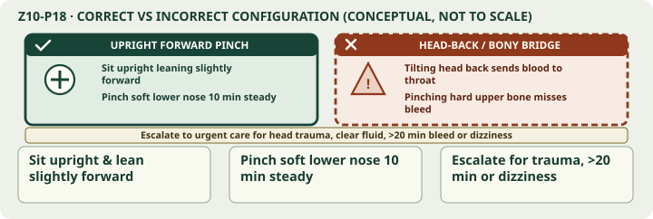

Z10-P18 · Wilderness medicine · New manuscript
Manage routine nosebleeds while spotting head-trauma or severe hemorrhage flags
Stop uncomplicated nosebleeds cleanly while recognizing when nasal bleeding signals serious trauma or uncontrolled blood loss.
When it applies · Spontaneous dry-air/altitude nosebleeds versus post-impact facial or head-injury bleeding.
Equipment · Clean tissues or gauze, watch, and cool compress if available.

Actions
- Have an alert person sit upright leaning slightly forward (NOT backward) so blood drains forward instead of down the throat, which triggers coughing, vomiting, and airway irritation.[M19]
- Pinch the soft lower portion of the nose firmly below the bony bridge continuously for 10 full minutes without peeking, breathing calmly through the mouth.[M19]
- Escalate immediately to emergency care if bleeding follows a significant head/face impact, includes clear watery fluid mixed with blood, continues beyond 20 minutes of firm pinching, or causes dizziness/weakness.[M19, M11, T02]
Failure recognition · Tilting the patient's head backward and pinching only the hard upper bony bridge while blood runs down their throat.[M19]
Verify · Confirm upright forward lean, steady 10-minute lower-soft-nose pinch, and absence of head-injury or dizziness red flags.[M19, M11]
Stop or change course · Heavy persistent bleeding, blood-thinning medication with uncontrolled flow, breathing difficulty, or dizziness requires urgent clinical evaluation.[M19, T02]
Evidence and editorial notes
- M11 · NIH / MedlinePlus · Head Injuries (current web edition)
- Section: Head Injury, Concussion Signs, and Spinal Precautions · Conditions: Falls, struck-by-branch trauma, or head impact with confusion, vomiting, worsening headache, or neck pain
Support: Assume possible head or spinal injury after significant impact; keep the head and neck still, monitor level of responsiveness, call EMS for red flags (loss of consciousness, repeated vomiting, unequal pupils, confusion, neck pain), and never resume hazardous travel.
Limitations: Delayed intracranial bleeding can worsen hours after an initially mild-seeming impact. · Conflicting evidence: None; mandates conservative evacuation for any neurologic red flag.
Editorial note: Grounds head-trauma, concussion, and spinal-motion-restriction cards. · Specialist reviewer: Neurotrauma and wilderness EMS
Primary source · checked 2026-11-24 - M19 · NIH / MedlinePlus · Bleeding (current web edition)
- Section: Internal Bleeding, Nosebleed, and Dressing Monitoring · Conditions: External vs suspected internal hemorrhage and severe epistaxis
Support: For routine nosebleed, sit upright leaning slightly forward and pinch the soft part of the nose continuously; escalate urgently for uncontrolled bleeding, coughing/vomiting blood, abdominal rigidity, or dizziness.
Limitations: Tilting the head backward causes blood swallowing and airway irritation. · Conflicting evidence: None; distinguishes minor nosebleed from internal-bleeding emergencies.
Editorial note: Supports bleeding sub-scenarios and recheck cadence. · Specialist reviewer: Emergency medicine and EMS
Primary source · checked 2026-11-24 - T02 · American Red Cross · First Aid Steps (current web edition)
- Section: First Aid Steps > Call 9-1-1 · Conditions: Lay emergency response to unresponsiveness, abnormal breathing or severe bleeding
Support: Activate EMS and get needed equipment. Follow dispatcher directions and act within training.
Limitations: Remote locations may delay EMS arrival, requiring sustained stabilization after activation. · Conflicting evidence: None; aligns with NPS-E.
Editorial note: Mandates early emergency activation and dispatcher adherence. · Specialist reviewer: EMS and wilderness medicine
Primary source · checked 2026-11-24
Source lineage · NIH MedlinePlus Bleeding; new manuscript · Classification · New manuscript.